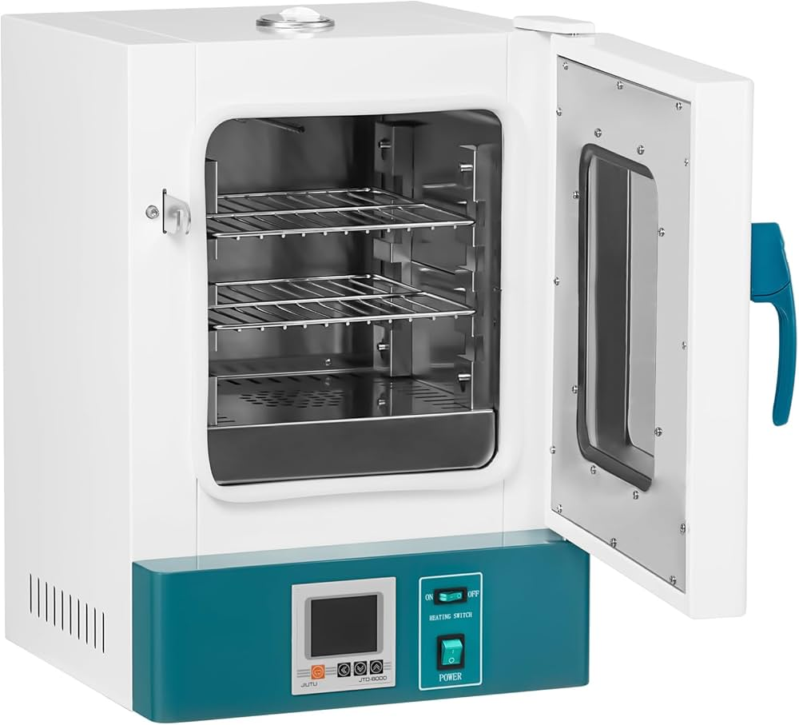
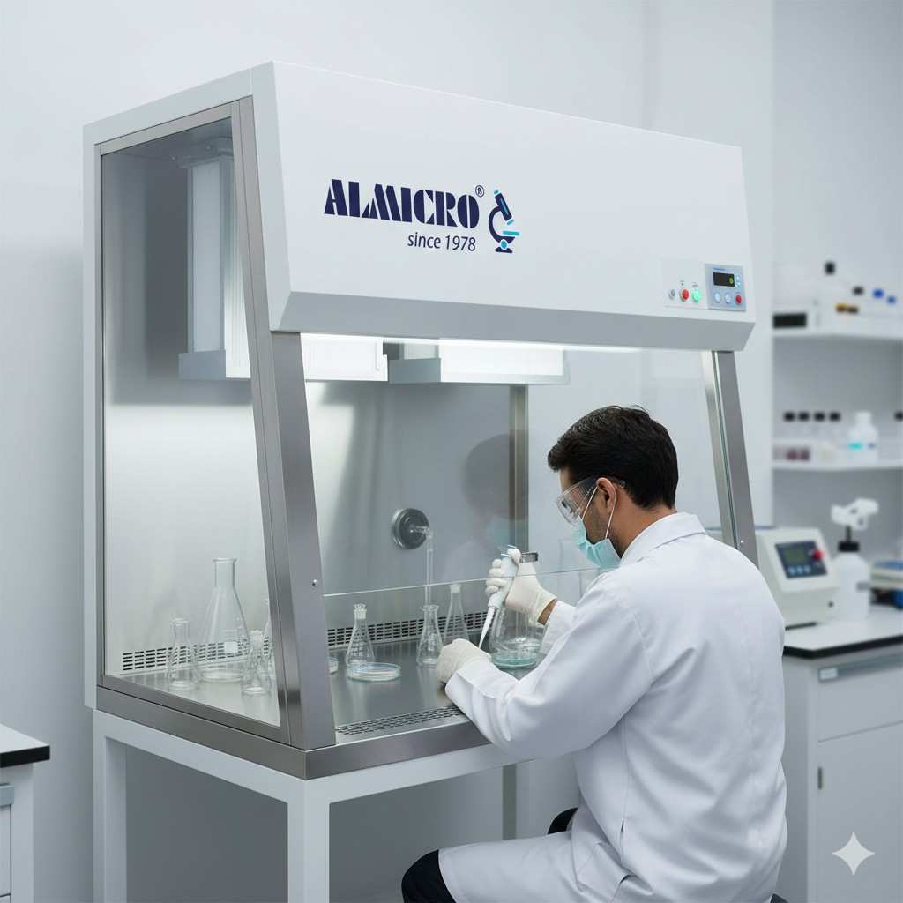

Laboratory Equipments

Centrifuge
It separates mixtures by using high-speed spinning to force denser materials outward and lighter materials to the top.

Incubator
It provides a controlled, enclosed environment with optimal temperature, humidity, and gas levels to foster biological growth.

Laminar Air Flow Chamber
It is the continuous, uniform movement of HEPA-filtered air in parallel lines to sweep contaminants out of a sterile workspace.

Microscope
It magnifies tiny objects by using lenses or electron beams to focus light or radiation, making invisible details visible.

PCR Machine
It copies specific DNA sequences by repeatedly cycling through heating and cooling to separate DNA strands, attach primers, and replicate the target genes.

Pipette
A pipette measures and transfers precise liquid volumes using a vacuum.

UV-Visible Spectrophotometer
It measures a substance's light absorption to determine its concentration based on the Beer-Lambert law.

Vortex Mixer
It uses rapid orbital motion to create a swirling whirlpool that quickly and homogeneously blends liquids.